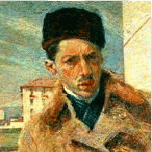

Boccioni nasce a Reggio Calabria il 19 ottobre 1882, da genitori romagnoli della provincia di Forlì, trasferitisi in Calabria.
La famiglia si sposta in seguito a Padova nel 1888 e poi a Catania nel 1897, dove Boccioni consegue il Diploma in un Istituto Tecnico. E' nella citta siciliana che il giovane Umberto inizia la collaborazione con alcuni giornali locali.
Nel 1901 si trasferisce a Roma presso una zia e comincia a frequentare lo studio di un cartellonista. Risale a questo periodo il suo incontro con Severini, insieme al quale diventa discepolo di Giacomo Balla, dal quale entrambi si allontaneranno molto presto. E' dell'aprile 1906 il suo primo soggiorno a Parigi, seguito da quello in Russia dopo pochi mesi.
Tornato in Italia si stabilisce a Padova e si iscrive all'Accademia di Belle Arti di Venezia. Intraprende un altro viaggio verso la Russia ma si ferma a Monaco, in Germania. Al ritorno da questo soggiorno comincia a dipingere e a sperimentare i primi tentativi nei campi dell'incisione.
La vita artistica italiana è ancora fortemente ancorata alla vecchie tradizioni provinciali. Per questo sceglie come meta Milano, unica città dinamica, dove conosce Romolo Romani, e frequenta Previati, dal quale riceve una certa influenza simbolista.
Dopo la pubblicazione sul "Figaro" del primo manifesto futurista ad opera di Marinetti, Boccioni si avvicina al movimento avanguardista e nel 1910 scrive, con Carrà e Russolo, il "Manifesto dei pittori futuristi" e il "Manifesto tecnico della pittura futurista", firmati anche da Severini e Balla.
Boccioni diventa il massimo e più rappresentativo esponente del movimento, sviluppando un linguaggio proprio e riconoscibile. Nel frattempo partecipa attivamente a tutte le iniziative, dalle lotte delle "Serate futuriste", organizzate nei teatri delle province italiane, alle mostre, da lui stesso allestite, nella varie capitali europee, Parigi, Londra, Berlino, Bruxelles. Intanto scrive il "Manifesto della scultura futurista", le pagine principali della sua poetica, scolpisce e dipinge la serie delle opere dinamiche; dal 1913 collabora alla rivista "Lacerba", organizzata dal gruppo fiorentino capeggiato da Soffici.
Lo scarso interesse per la sua arte da parte del pubblico italiano, e anche l'ostilità di certi ambienti culturali futuristi, come quello fiorentino, lo spingono a rifugiarsi nell'appoggio della madre, figura fondamentale e amatissima.
Con l'inizio del Primo Conflitto Mondiale nasce l'adesione di certi intellettuali all'interventismo. Boccioni, e come lui molti altri pittori, si arruola nei ciclisti e parte per il fronte. Nel frattempo la sua arte si trasforma sull'onda delle nuove avanguardie europee. Collabora con la rivista "Avvenimenti" e si riavvicina al suo vecchio maestro Balla.
Nel 1916 continua a dipingere. L'anno seguente si arruola di nuovo e il 17 agosto 1917 muore dopo una caduta da cavallo nella periferia di Verona.